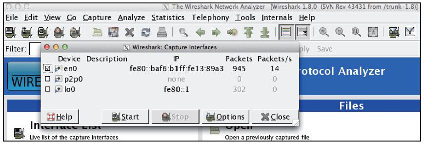
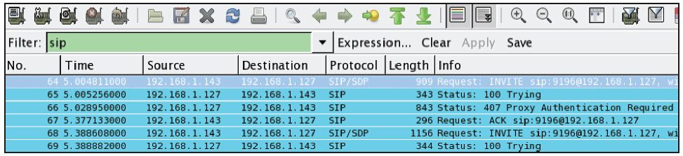
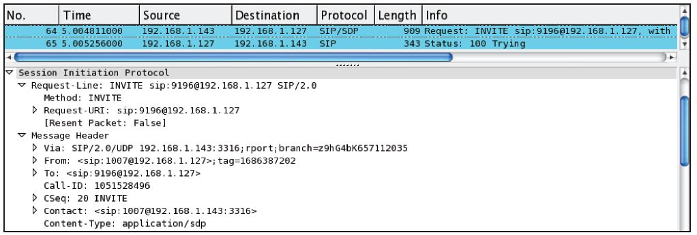
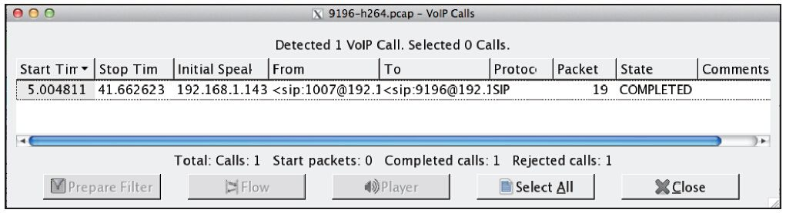
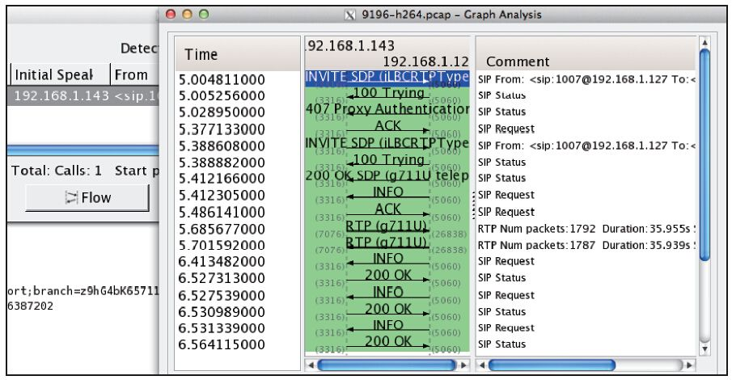
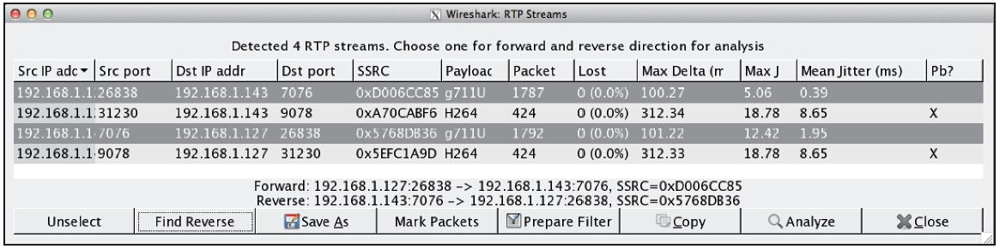
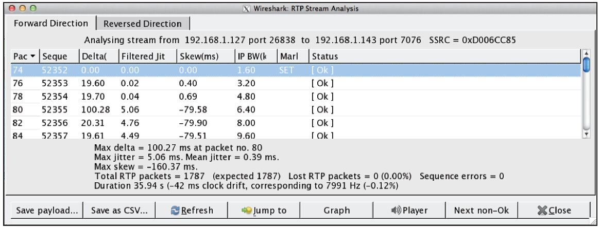

10.3 使用Wireshark抓包并分析呼叫
在涉及FreeSWITCH与其他系统的对接时，由于大家对SIP信令及相关RFC的理解有偏差，或者具体实现的取舍不一样，就可能造成信令间细微的差别。虽然在FreeSWITCH内部也可以抓包，但如果系统中有大量的呼叫，使用FreeSWITCH抓包就有些“看不过来了”。这时候，就要使用我们上一节讲到的各种抓包工具。
本节将介绍一款专用的抓包工具——Wireshark，其附带了更多的分析工具，可以比较全面地分析呼叫。
如果Wireshark跟你的FreeSWITCH在同一台机器上，可以直接使用Wireshark抓包；如果你想抓远程Linux服务器上的包，而一般远程机器没有或不打开图形界面，则可以在Linux上安装tcpdmp或Wireshark的命令行版本tshark。
10.3.1 使用Wireshark抓包
我们上一节讲到的各种抓包工具都是命令行版本的，比较适合应用在没有图形界面的服务器上。在这一节，我们要讲的是一个图形界面的抓包工具Wireshark，也就是tshark的图形界面版。当然，除了它有一个比较好的图形界面外，它更强大的功能是能识别主流的各种通信协议，因而可以很方便地分析协议的内容（它甚至专门有一个Telephony主菜单，专门用于分析各种电话类协议）。
Wireshark是跨平台的，在主流的平台上都有相关的安装包。关于如何下载和安装Wireshark，在这里我们就不多介绍了。下面我们来看一些实际抓包分析的例子。
在进行抓包前，首先打开Wireshark，按最左边的第一个图标选择一个网卡设备，如图10-1所示。

图10-1 选择一个网卡设备进行抓包
在笔者的Mac电脑上，网卡的名字是en0，它相当于Linux上的eth0（在Windows上可能会有其他的名字，名字不确定）。一般来说，在选择网卡的界面上稍微停留一会，相关网卡后面会有带数字的流量指示，应该能比较容易找到对应的网卡。
选择一个网卡后，就可以单击Start开始抓包了。这时候，笔者打开了一个视频电话（默认的9196号码），此时可以看到SIP包以及许多RTP的包 [1] 。
我们这时候就可以挂断电话了。电话挂断后，我们可以停止抓包，否则数据量大了以后看起来就比较麻烦了。另外，为了方便以后分析，我们也可以将抓到的数据包保存起来，一般保存为PCAP文件，这样的文件Wireshark能自动打开。
10.3.2 使用Wireshark对抓包进行分析
Wireshark可以分析使用tcpdump或pcapsipdump抓下来的pcap包。在这里，我们直接分析上一节抓到的包。
1.分析SIP包
首先，我们先来看SIP信令。由于我们抓到了很多包，为了看起来方便，可以使用sip过滤器，只看我们关心的包。如图10-2所示，我们可以在“Filter:”一栏中输入“sip”，便可以只显示所有的SIP包。

图10-2 使用了sip过滤器只显示SIP包
我们可以通过鼠标定位到INVITE消息，如图10-3所示，读者可以在下面的框里看到消息的内容。虽然它看起来不如直接在FreeSWITCH中直接用siptrace抓出来的纯文本的包直观，但是Wireshark可以对SIP消息做深入的分析，可以显示更多的帮助信息。图10-3显示了SIP中的INVITE消息的详细情况。

图10-3 在Wireshark中查看INVITE消息
Wireshark甚至有专门分析VoIP通话的工具。在主菜单中，选择Telephony→VoIP Calls可以看到所有的VoIP呼叫，如图10-4所示。

图10-4 一路VoIP通话
此时，选择一路呼叫并单击Flow按钮，就可以看到详细的SIP呼叫流程，如图10-5所示。

图10-5 Wireshark中分析呼叫流程
有了前面的SIP基础，读者就可以按照这个流程自己试一下了。打几个正常的或者不正常的电话，比较一下它们的异同。
另外，在上一步中，Flow按钮的旁边有一个Play按钮，单击这个按钮以后再单击Decode按钮可以将音视频流的数据进行解码，并可以播放音频流里的声音。注意，如果音频不是以PCMU或PCMA格式编码的，则不能播放。关于RTP流的详细分析我们将在下一节进行讨论。
2.分析RTP包
在Wireshark中也可以分析RTP包。在Filter栏中输入“RTP”就可以看到所有的RTP包。一般来说，可以先肉眼大体看一下收发是否规律。详细的分析可以使用Telephony→RTP→Show All Streams显示所有的RTP流，如图10-6所示，它显示了我们这次呼叫中涉及的两路PCMU的音频流和两路H264的视频流。
先选择一路音频流，通过单击Find Reverse按钮，可以找到并选择反向的流。然后单击Analysis就可以看到两路RTP流的详细分析，如图10-7所示。

图10-6 一个呼叫中的4路RTP流

图10-7 Wireshark中的RTP流分析
在分析中，也可以通过上一节提到的Play按钮播放音频流，或者使用Save Payload按钮将音频数据存到单独的文件中。如果使用AU格式，则可以在同一个文件中保存双向的音频流；但如果使用RAW格式，只能将单向的音频流分别存到不同的文件里。另外，如前面所说，如果语音编码不是PCM格式的话（如G729），则音频流只能存成RAW格式，然后再用其他工具去分析。
除此之外，还可以使用Graph按钮生成某一路流相关的统计图，如果图表显示比较规律，那一般说明是比较好的，如果生成的图表不是很规律，那就说明可能是网络上有丢包、延迟或抖动等。（我们曾经在第9章讲过这几个指标，这里就不多讲了）。解决音频或视频质量的问题需要具体问题具体分析，读者可以在学习中慢慢积累经验。
最后值得一提的是，如果是分析视频流，可能会在视频分析结果中发现“Incorrect Timestamp”之类的提示，有时候这个提示不一定准确，因为该功能目前只适合分析音频流。
3.其他技巧
前面我们提到过sip和rtp两个Filter，它们可以在Wireshark中过滤可见包的内容，其他常用的还有根据来源IP地址过滤，如：
ip.src == 192.168.1.143
根据目的地址过滤，如：
ip.dst == 192.168.1.143
还可以是多种条件的组合等，如：
ip.src == 192.168.1.127 && ip.dst == 192.168.1.143 && udp.port == 5060
上面我们抓到的是一个完整的呼叫。有时候，我们可以为了跟踪一路通话的语音问题而从一个通话的中间开始抓包。这时候，由于缺少SIP的上下文信息，所有抓包的内容显示为UDP（即如果没有SIP包的话，Wireshark就认不出这些UDP包是RTP包了）。如果出现这样的情况，我们需要找到类似RTP的包。比方说，如果我们知道呼叫是PCMU编码的，那么它的包长可能是214字节（IP+UDP包头42字节加上RTP包的172字节）。找到这类包以后，可以点击某一个包，然后从右键菜单中选择“Decode As...”，进而选择RTP，就可以将同类的包用RTP包的格式进行解码了。
更多的关于Wireshark的使用方法及技巧请参阅相关资料。
[1] 注意，笔者的FreeSWITCH与Wireshark在同一台机器上，而使用的软电话在另外一部手机上。如果所有设备在同一台机器上则抓不到包（当然有别的办法解决），因为要保证数据包是经过网卡的。如果读者想抓取与远程FreeSWITCH的通话，可以在与Wireshark相同的机器上装软电话，这样也能抓到包，只不过是客户端这一侧的。